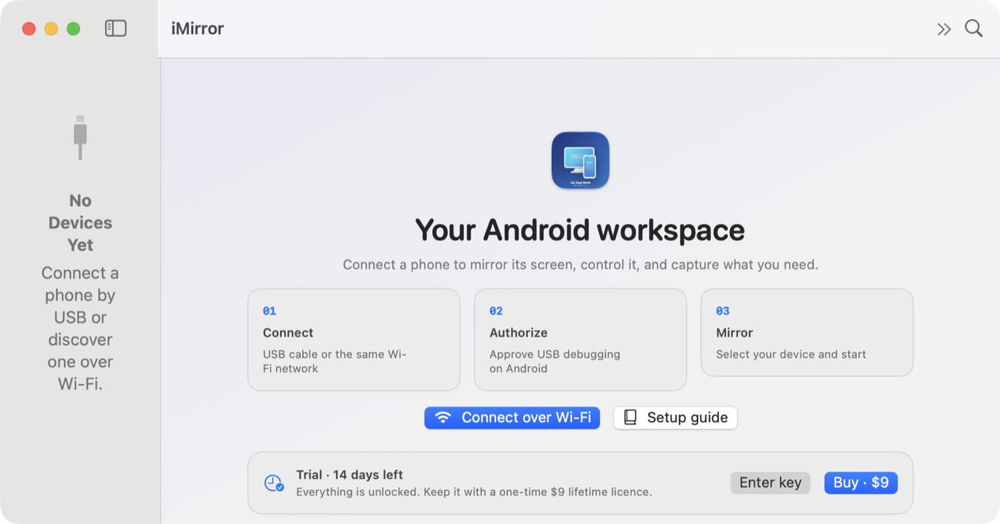
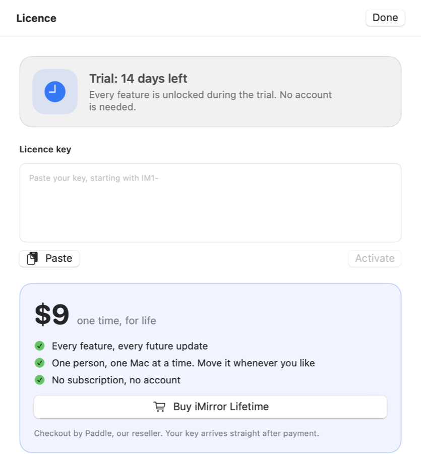
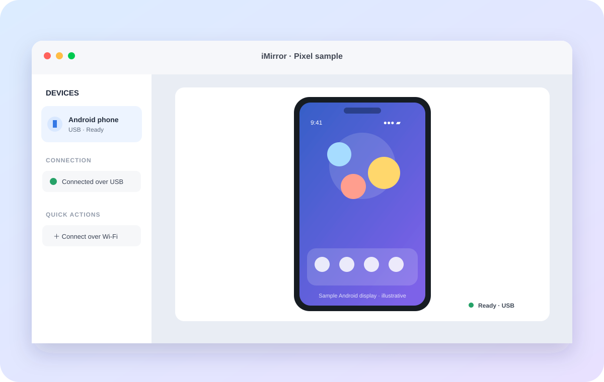

USB or Wi-Fi
Connect by cable, or pair through Android Wireless debugging on a trusted shared network.
See and control your Android phone from a focused macOS workspace. Connect over USB or Wi-Fi, tap, swipe, type and paste with your Mac, and save screenshots and recordings.
Signed and notarized for macOS 14+ · Apple silicon and Intel · No account, no subscription.


iMirror is a macOS app that shows your Android phone or tablet on your Mac and lets you control it with the mouse, trackpad and keyboard. Connect by USB cable or over your local Wi-Fi (Android Wireless debugging), then tap, swipe, scroll, type and paste. You can save PNG screenshots and silent MP4 recordings. The screen stream goes straight between your phone and your Mac, never through a cloud server.
It suits people who test or demo Android apps, follow along with phone tutorials, or just prefer a bigger screen and a real keyboard.
Real screenshots of the app. Everything you need is one click away, with no setup project.

iMirror brings familiar Mac controls to an Android screen, without turning a quick task into a setup project.
Connect by cable, or pair through Android Wireless debugging on a trusted shared network.
Tap, swipe, and scroll with your mouse or trackpad. Keep Back, Home, and Recents close by.
Save a PNG screenshot or record silent MP4 video to a folder you choose.
Paste text into the focused Android field from your Mac clipboard when you choose.
Mirror sessions connect directly to your device. iMirror does not send your screen to an Our Apps World server.
If Android Platform-Tools are missing, review Google's terms and let iMirror set them up for this Mac.
One-time Android setup gives your Mac permission to communicate with your device.
Turn on Developer options and USB debugging on Android, then connect the phone and approve its trust prompt.
Open iMirror and select the authorized device. For Wi-Fi, pair from Android Wireless debugging first.
Start mirroring, use Mac navigation and input, and save captures wherever you choose.
The manual covers USB setup, Wi-Fi pairing, controls, captures, and common connection issues.
No subscription, no account. One licence is yours for life.
Prices in US dollars; sales tax or VAT is added at checkout where it applies. Orders are processed by Paddle.com, our reseller and Merchant of Record. Your licence key arrives straight after payment. See the Terms and Refund Policy.
Clear answers about compatibility, network access, and saved media.
iMirror uses Android Debug Bridge. Connect by USB with USB debugging enabled, or pair Wireless debugging on Android 11 or later over a trusted shared Wi-Fi network.
No. The screen stream is sent directly between the Android device and your Mac over USB or your configured local network. iMirror does not route screen content through an Our Apps World server.
Yes. Save a PNG screenshot or an MP4 video recording to a location you choose. Recordings contain video only and do not include audio.
iMirror requires macOS 14 or later and an Android phone or tablet with debugging enabled.
iMirror has a free 14-day trial with every feature. After that, iMirror Lifetime is a one-time $9 purchase for one person, active on one Mac at a time, with every future update and no subscription.
A licence is active on one Mac at a time. Activate your key on another Mac and it moves there; the first Mac is signed out automatically. You can also free it from iMirror › Licence.
Yes. You can get a full refund within 14 days of purchase. See the Refund Policy for how to ask.
Download the free trial and mirror your phone in a couple of minutes. Keep it for $9, once.